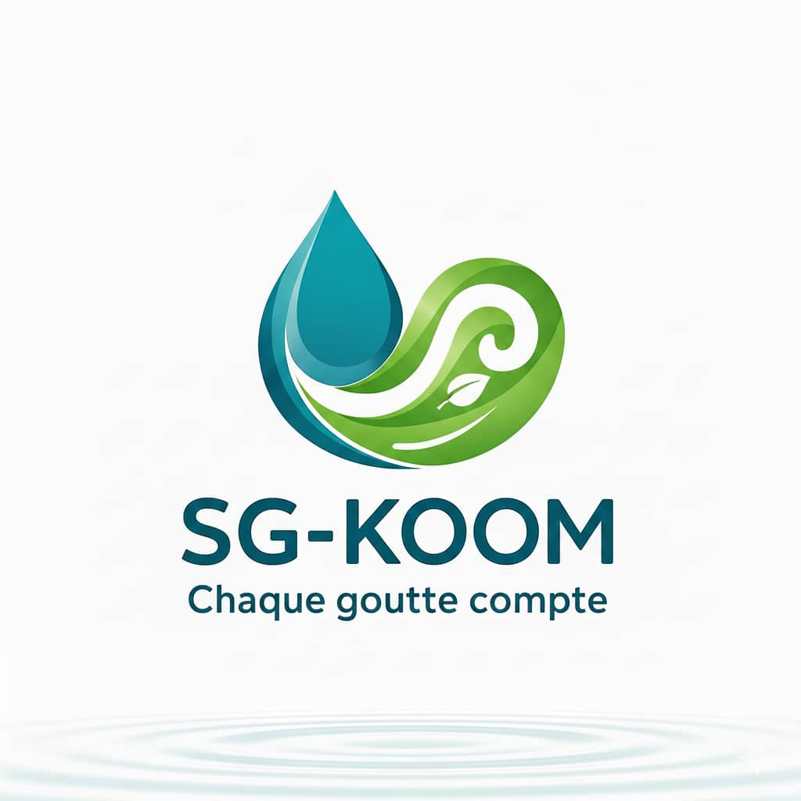

YILGA — Agrotech & IA
Plateforme intelligente pour les agriculteurs.

Étudiant en CPGE • futur ingénieur en IA et en cybersécurité • Porteur de projets à impact
Étudiant ambitieux en classes préparatoires MPI à l'institut International 2iE, passionné par la technologie, l'art et les projets innovants. J’ai conçu et développé plusieurs projets mêlant ingénierie, intelligence artificielle et développement durable. J'aime donner du sens aux idées et transformer des concepts complexes en récits clairs, humains et impactants.
Persévérant et mature, je m’investis sur le long terme dans ce que j’entreprends. Que ce soit dans la technologie, l’innovation ou l’expression artistique, je cherche constamment à comprendre, à progresser et à construire des projets cohérents, utiles et porteurs de vision.
Plateforme intelligente pour les agriculteurs.

Système domestique enterré de traitement et réutilisation des eaux grises.

Optimisation énergétique et hydraulique des réseaux d’eau.